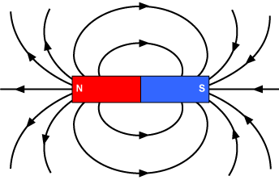

How Do Magnets Work??
Science · 5 min read

Magnet work because of the magnetic fields created by the electrons inside atoms. In some materials like iron many tiny magnetic fields line up in the same direction, creating a stronger magnetic field that makes the material magnetic.
Every Magnet has two poles a north pole and a south pole. Opposite pole attract each other where similar pole repel each other. Magnets can also attract certain metals like iron,nickel and cobalt.
The area around a magnet where its magnetic force acts is called magnetic field.Although we cannot see it directly, we can observe its effect using iron filings. Mangnets are used in many everyday objects , including compasses,speakers,electric motors and refrigerator doors.